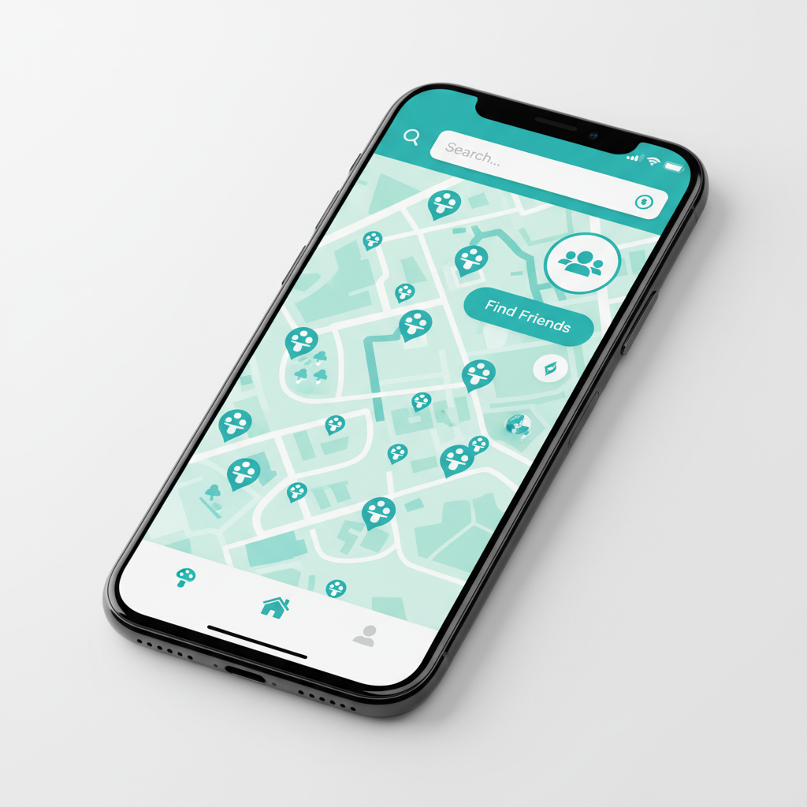

Votre compagnon de cueillette idéal
Découvrez des champignons, retrouvez des amis et explorez la nature autrement. Rejoignez la communauté dès aujourd’hui.

Pourquoi pikPal ?
Observations de champignons
Trouvez et partagez des emplacements de champignons. Les observations restent disponibles pendant 24 heures pour garantir leur pertinence.
Suivi GPS
Marquez facilement votre position actuelle ou saisissez des coordonnées pour un suivi précis.
Recherche d’amis
Rencontrez d’autres cueilleurs à proximité. Gérez votre visibilité grâce à des réglages de confidentialité simples.
Questions fréquentes
Pour garder la carte à jour et pertinente, toutes les observations de champignons expirent automatiquement et sont retirées de la carte 24 heures après leur publication.
La fonctionnalité Amis vous permet de trouver d’autres utilisateurs qui ont également choisi d’être visibles. Pour figurer dans cette liste, activez « Autoriser les autres à me trouver » dans les réglages de votre profil. Votre position sert uniquement à calculer la distance entre vous et les autres utilisateurs ; elle n’est jamais partagée directement.
Lors de l’ajout d’un champignon, saisissez les coordonnées GPS ou touchez « Position actuelle ». Si vous avez autorisé l’accès à votre position, l’application utilise celle de votre appareil pour remplir automatiquement la latitude et la longitude.
Pour supprimer définitivement votre compte et toutes vos données, ouvrez l’onglet Profil, puis Réglages. Le bouton « Supprimer mon compte » se trouve en bas de l’écran. Attention : cette action est définitive et irréversible.